Click Each Piece To Learn More
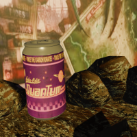
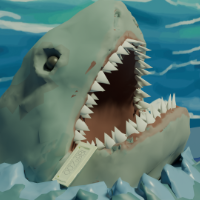
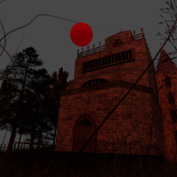
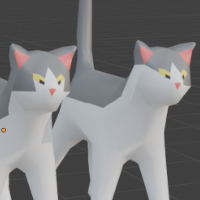
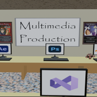
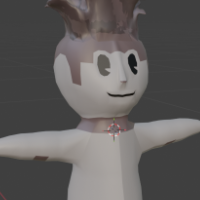
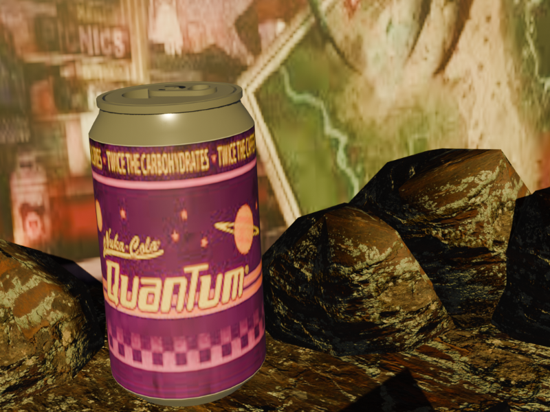
While attending Multimedia Production, one of our first
assignments in Modeling and Animation was to make a 3D pop
can.
The wrap design was our choice and being a huge fan of the
Fallout games, I chose my favourite Nuka Cola, Quantum! It
has nothing to do with the fact that it's blue! I then
played with isospheres to make the rocks and found the
mothman photo to use as the backdrop.
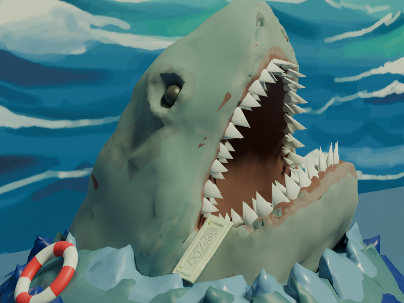
Multimedia Production assignment: To create 3 3D Models and
stage them.
I first came up with the idea because sharks happen to be my
favourite animal, and I was introduced to Jaws at a young
age, so the idea to do the shark and license plate from the
movie was almost immediate when we got our assignment.
I fell in love with sculpting in high school and was excited
to try it on a computer. The difference from physically
sculpting to digitally sculpting was not as drastic as I had
thought it would be. Knowing the physical application
definitely helped me, but it was still a learning curve. I
made Maws out of one single cylinder (minus the teeth and
eyes) and sculpted the entire thing. I made the teeth out of
individual cones and placed them around the mouth and made
the eyes with spheres.
Overall, I thoroughly enjoyed learning about the sculpting
side of Blender even though it was only a small portion of
what Blender has to offer.
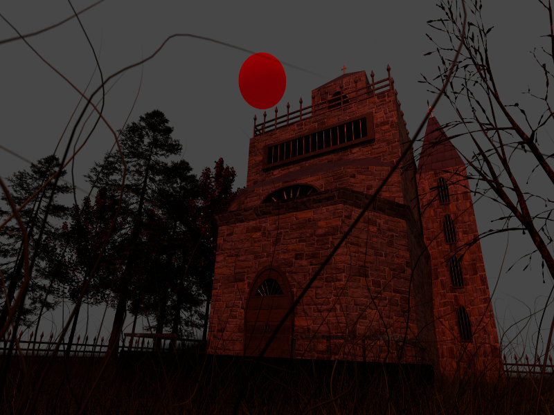
While attending Multimedia Production, one of our Modeling
and Animation assignments was to create a 3D environment. We
were able to choose from a haunted house, a cozy cabin, and
a scifi building!
I had gotten the approval first and chose to do a haunted
asylum! This was definitely one of my favorite assignments
and I had a lot of fun doing it! I learned so much when
tackling this project: array modifier for my fence, particle
grass, and procedurial textures being a few.
The main challenge I had when working on this project was
when I tried to render. I found out pretty quickly that
particle grass and trees definitely weighed heavily on the
rendering process. It was absolutely a learning curve and I
loved every minute of it, even the challenges! I was also
very proud of the outcome and will be making this into a
level and completing the inside of the asylum!
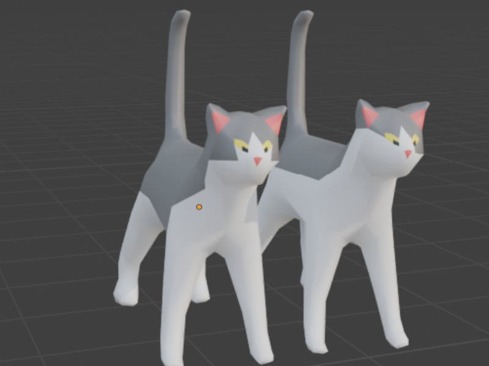
Meet The Boys, Sam and Dean! Two of the cutest supporters for Multimedia Production! They make sure they make their opinions known to their mother, one of the MMP instructors! Sam and Dean were modeled for The Classroom project!
Throughout the program we all got to know them fairly well as our instructor told us stories or showed us cute photos for daily dopamine doses throughout our time in the program. I decided to model them and have them be the animations for The Classroom project. They drift out of Lady Nefeloma's card when interacted with while music plays and then they drift back in once clicked a second time.
Sam and Dean are one of my favourite creations while attending Multimedia Production. Getting to see the photos in our course outline or hearing the stories definitely helped me through some of the more stressful times throughout MMP!
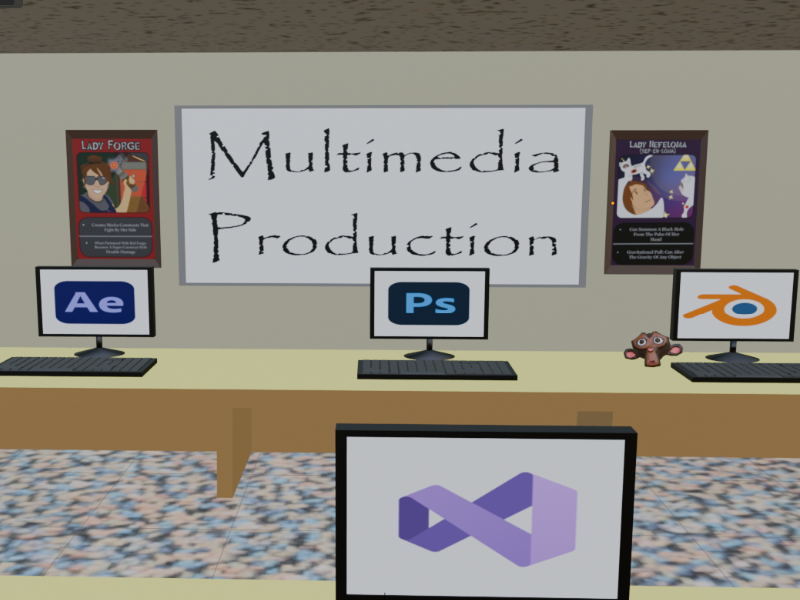
While attending Multimedia Production, one of our final
projects was to create an interactive website with 3D models
made in Blender. This project went across multiple courses
and was definitely a learning experience, combining both
coding and 3D modeling!
For this assignment I chose to do one of the classrooms we
spent the majority of our time in while attending MMP.
Having interactables and an animation within the environment
was also required so I chose to bring the attention to a
few things:
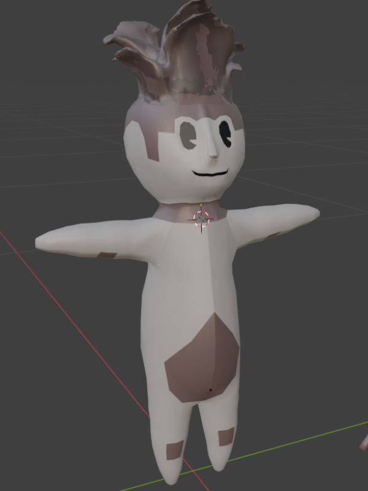
This is my character Nobyl of Chernobyl! Inspired by the
mushroom discovered in Chernobyl that was absorbing the
radiation. I made a bit of a twist on his mushroom head and
the inspiration for that was from the zombies in The Last of
Us.
While attending Multimedia Production our final assignment
in 3D Modeling was to create a 3D character and then create
an animation inside Blender. This is the 3D model version of
Nobyl!